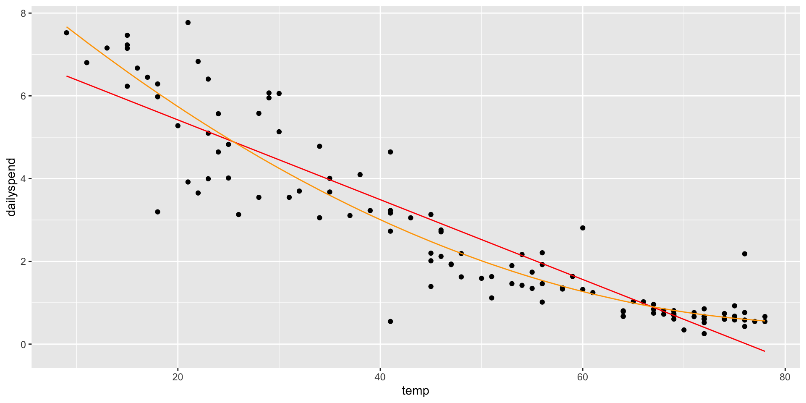
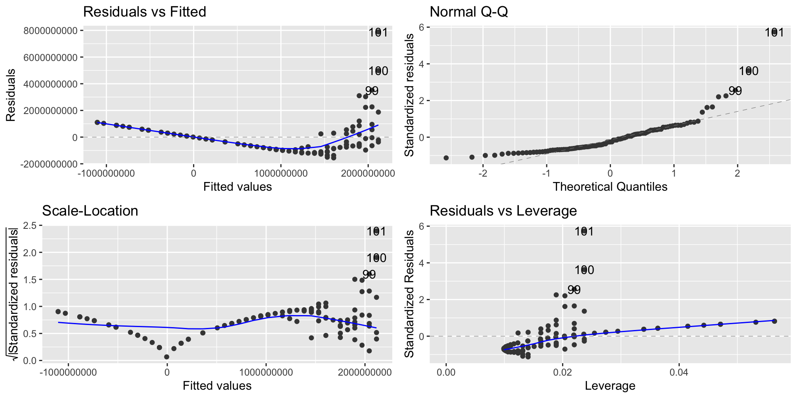
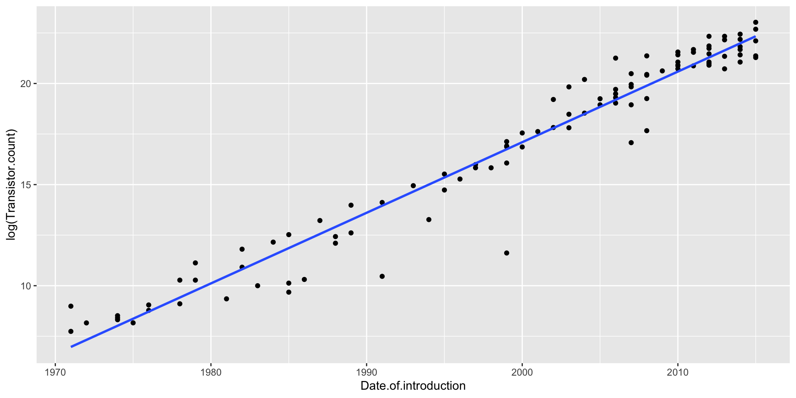

Call:
lm(formula = dailyspend ~ temp, data = utilities)
Residuals:
Min 1Q Median 3Q Max
-2.84674 -0.50361 -0.02397 0.51540 2.44843
Coefficients:
Estimate Std. Error t value Pr(>|t|)
(Intercept) 7.347617 0.206446 35.59 <0.0000000000000002 ***
temp -0.096432 0.003911 -24.66 <0.0000000000000002 ***
---
Signif. codes: 0 '***' 0.001 '**' 0.01 '*' 0.05 '.' 0.1 ' ' 1
Residual standard error: 0.8663 on 115 degrees of freedom
Multiple R-squared: 0.841, Adjusted R-squared: 0.8396
F-statistic: 608.1 on 1 and 115 DF, p-value: < 0.00000000000000022
Let’s interpret this relation
For one unit increase in temperature (Fahrenheit), there will be a 7-cent decrease in spending
Polynomial models
library(ggfortify)autoplot(lm1)
Linearity and homoscedasticity are violated
Polynomial models
We’ll use polynomial regression to fix problems
If a polynomial curve (e.g., quadratic, cubic, etc) would be a better fit for the data than a line, we can fit a curve to the data.
The way we do this is by adding\(X^2\) to the model as a second predictor variable.
This can “fix” the linearity problem because now \(Y\) is a linear function of \(X\) and \(X^2\), resulting in: \[
Y = \beta_0 + \beta_1\cdot X + \beta\cdot X^2 + e
\]
Polynomial models
We add the term I(temp^2) in the regression equation:
Call:
lm(formula = dailyspend ~ temp + I(temp^2), data = utilities)
Residuals:
Min 1Q Median 3Q Max
-2.87250 -0.28048 -0.03929 0.26391 2.19117
Coefficients:
Estimate Std. Error t value Pr(>|t|)
(Intercept) 9.4722885 0.3907892 24.239 < 0.0000000000000002 ***
temp -0.2115553 0.0191046 -11.074 < 0.0000000000000002 ***
I(temp^2) 0.0012476 0.0002037 6.124 0.0000000133 ***
---
Signif. codes: 0 '***' 0.001 '**' 0.01 '*' 0.05 '.' 0.1 ' ' 1
Residual standard error: 0.7547 on 114 degrees of freedom
Multiple R-squared: 0.8803, Adjusted R-squared: 0.8782
F-statistic: 419.3 on 2 and 114 DF, p-value: < 0.00000000000000022
We have that the new term is evaluated as an extra variable.
Polynomial models
Writing out the equation: \[
\widehat{\texttt{dailyspend}} = 9.4723 −0.2116\cdot \texttt{temp} + 0.0012\cdot \texttt{temp}^2
\] The effect of the extra variable is statistically significant:
The residual standard error of the polynomial model is \(\texttt{0.75}\).
The residual standard error of the linear model is \(\texttt{0.87}\).
Polynomial models
Adding an \(X^2\) term fits a parabola to the data (orange line)
ggplot(utilities, aes(x = temp, y = dailyspend)) +geom_point() +geom_line(aes(x = temp, y =predict(lm1)), col ="lightblue") +geom_line(aes(x = temp, y =predict(lm2)), col ="orange")

Polynomial models
It solves the linearity problem
autoplot(lm2)
Polynomial models
What about a higher-order polynomial?
We could fit a cubic curve by adding an \(X^3\) term
Making the polynomial higher order will decrease the RSE
Why not go nuts and fit a 7th degree polynomial?
Degree
name
RSE
1
linear
0.866
2
quadratic
0.754
3
cubic
0.755
4
quartic
0.755
5
quintic
0.758
6
0.761
7
0.761
Polynomial models
lm7 <-lm(dailyspend ~poly(temp,7), data=utilities) ggplot(utilities, aes(x = temp, y = dailyspend)) +geom_point() +geom_line(aes(x = temp, y =predict(lm7)), col ="red") +geom_line(aes(x = temp, y =predict(lm2)), col ="orange")
Too high a degree creates dangers with extrapolation
Building polynomial models
Start simple: only add higher-degree terms to the extent it gives you a substantial decrease in the RSE, or satisfies an assumption hold that wasn’t satisfied before
You must include lower-order terms: e.g., if you add \(X^3\), you must also include \(X\) and \(X^2\)
Be careful about overfitting when adding higher-order terms!
Be particularly careful about extrapolating beyond the range of the data!
Mind-bender: We can think about an \(X^2\) term as an interaction of \(X\) with itself: in a parabola, the slope depends on the value of \(X\)
The log transformation
We saw that we can use transformations to fix problems
Sometimes, a violation of regression assumptions can be fixed by transforming one or the other of the variables (or both).
When we transform a variable, we have to also transform our interpretation of the equation.
The log transformation
The log transformation is frequently useful in regression, because many nonlinear relationships are naturally exponential.
\(\log_b x=y\) when \(b^y=x\)
For example, \(\log_{10} 1000 = 3\), \(\log_{10}100 = 2\), and \(\log_{10}10 = 1\)
The log transformation
Anytime you need to ”squash” one of the variables (logs make huge numbers not so big!)
Skewed data is also a good candidate for log
Moore’s Law
Moore’s Law was a prediction made by Gordon Moore in 1965 (!) that the number of transistors on computer chips would double every 2 years
This implies exponential growth, so a linear model won’t fit well (and neither will any polynomial)
ggplot(moores, aes(x = Date.of.introduction, y = Transistor.count)) +geom_point() +geom_smooth(method ="lm", se =FALSE)
Moore’s Law
lm_moore =lm(Transistor.count ~ Date.of.introduction, data = moores)autoplot(lm_moore)

A linear model is a spectacular fail
Modeling exponential growth
If \(Y = ae^{bX}\), then
\[\log(Y) = \log(a)+ bX\]
In other words, \(\log(Y)\) is a linear function of \(X\) when \(Y\) is an exponential function of \(X\)
So if we think \(Y\) is an exponential function of \(X\), predict \(\log(Y)\) as a linear function of \(X\)
Modeling exponential growth
Transistors does NOT have a linear relationship with year
\(\log(\texttt{Transistors})\) does have a linear relationship with year
ggplot(moores, aes(x = Date.of.introduction, y =log(Transistor.count))) +geom_point() +geom_smooth(method ="lm", se =FALSE)

Log-linear Model
Let’s run the regression model
options(scipen =999)lm_moore =lm(log(Transistor.count) ~ Date.of.introduction, data = moores)summary(lm_moore)
Call:
lm(formula = log(Transistor.count) ~ Date.of.introduction, data = moores)
Residuals:
Min 1Q Median 3Q Max
-5.1299 -0.3338 0.1767 0.5230 2.0626
Coefficients:
Estimate Std. Error t value Pr(>|t|)
(Intercept) -681.212056 15.958165 -42.69 <0.0000000000000002 ***
Date.of.introduction 0.349154 0.007981 43.75 <0.0000000000000002 ***
---
Signif. codes: 0 '***' 0.001 '**' 0.01 '*' 0.05 '.' 0.1 ' ' 1
Residual standard error: 1.054 on 99 degrees of freedom
Multiple R-squared: 0.9508, Adjusted R-squared: 0.9503
F-statistic: 1914 on 1 and 99 DF, p-value: < 0.00000000000000022
Modeling exponential growth
autoplot(lm_moore)
Interpretation of the model
Our model is \[\widehat{\log(\texttt{Transistors})} = −681.21 + 0.35 \cdot \texttt{Year}\]
Two interpretations of the slope coefficient:
Every year, the predicted log of transistors goes up by 0.35
More useful: Every year, the predicted number of transistors goes up by 35%
A constant percentage increase every year is exponential growth!
Interpretation of the model
Making predictions using the log-linear model
When making predictions, we have to remember that our equation gives us predictions for \(\log(\texttt{Transistors})\), not Transistors!
Example: To make a prediction for the number of transistors in 2022: \[
\log(\texttt{Transistors}) = −681.21 + 0.35(2022) = 26.49
\] But our prediction is not 26.49:
ggplot(moores, aes(x = Date.of.introduction, y = Transistor.count)) +geom_point() +geom_line(aes(x = Date.of.introduction, y =exp(predict(lm_moore))), col ="orange")